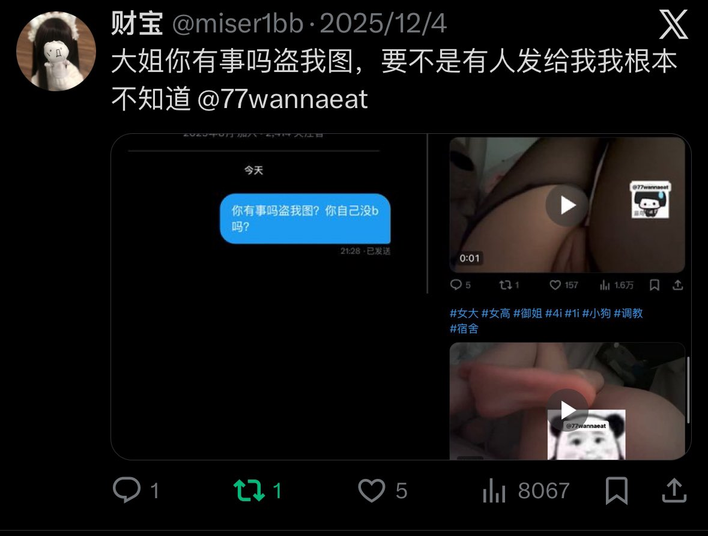
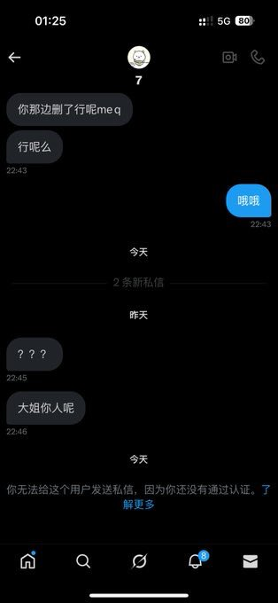
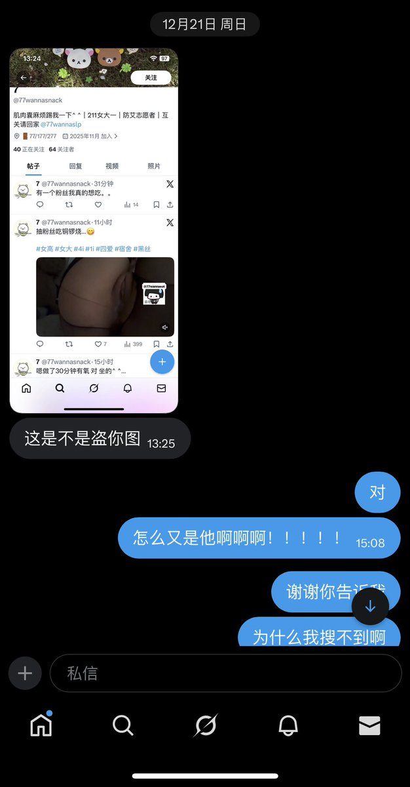

咪
@woshixiaoyu123
RT @miser1bb: 这位不知道性别的人第二次偷我图了哈，第一次12.5日我就有发过她盗我照片，看聊天内容也能看得出来她承认了把视频删了想让我把挂她的帖子也删了，它大号冻结之后，重新起了个号接着发，第二次也是我粉丝告诉我才知道，我让她出来对峙，可以po原相机地址和日期她不…



财宝
@miser1bb
这位不知道性别的人第二次偷我图了哈，第一次12.5日我就有发过她盗我照片，看聊天内容也能看得出来她承认了把视频删了想让我把挂她的帖子也删了，它大号冻结之后，重新起了个号接着发，第二次也是我粉丝告诉我才知道，我让她出来对峙，可以po原相机地址和日期她不敢，共四张图 @77wannasnack https://t.co/02dYh6vFHp